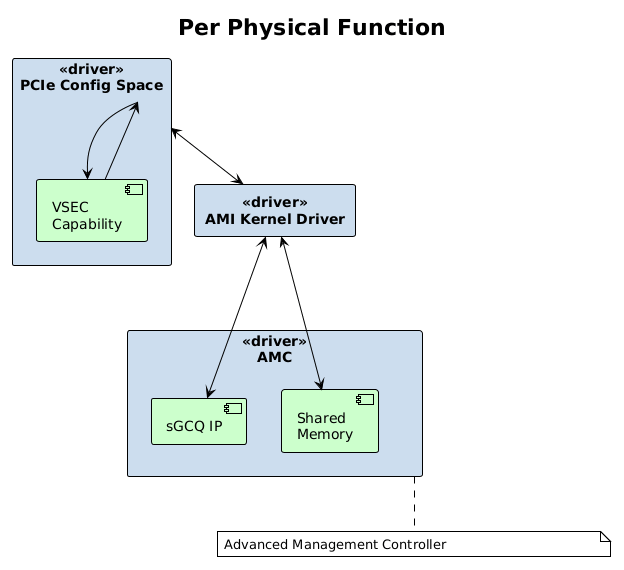
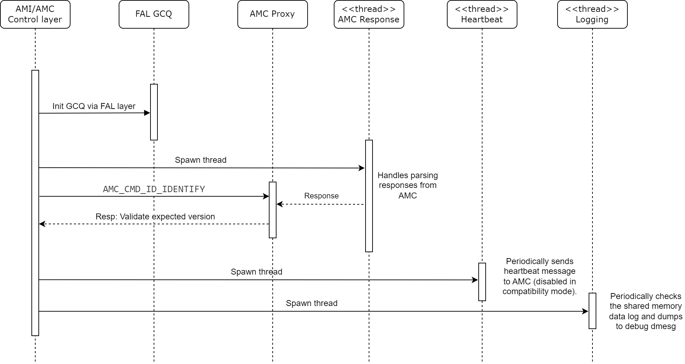
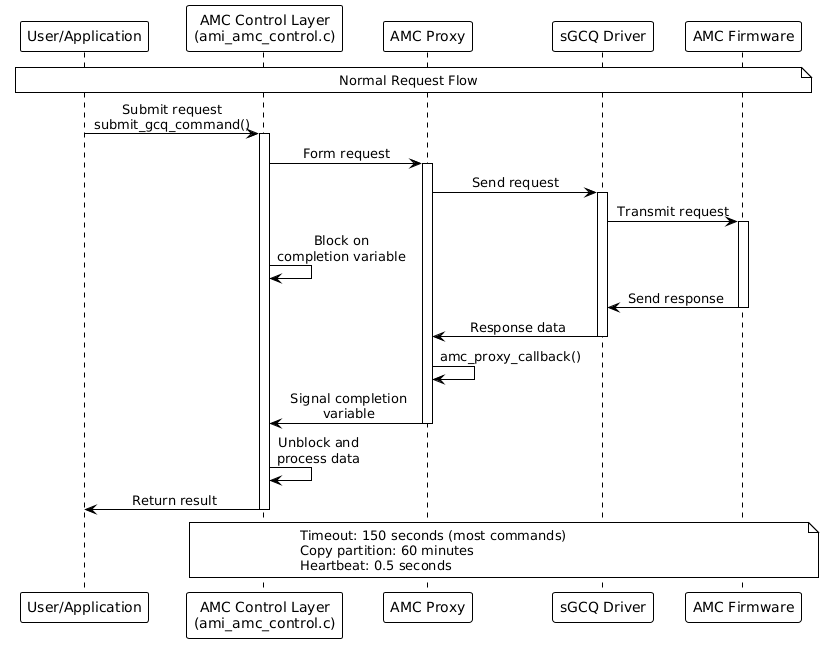

AMI - Kernel Driver Interaction¶
Initialization¶
Mapping GCQ IP/Payload¶
For each physical function during initialization, the kernel module will parse the PCIe extended capabilities to get access to the VSEC capability.
This capability contains the associated path (PCIe bar/offset & length) to the GCQ and to the shared memory interface.

Partition Table¶
Using the information obtained from the VSEC capability, the driver will parse the top of the shared memory which contains a partition table populated by the AMC on initialization.
The AMI driver uses this data to get the initial AMC status, information used to initialize the GCQ driver via FAL, obtain the AMC log and to read any populated response data.
| Field | Description |
|---|---|
| Magic Number | Unique identifier |
| GCQ Ring Buffer offset/length | Used by the GCQ driver to store CQ/SQ slot data |
| AMC Status | This will be set to a value of 0x1 when the AMC is fully initialized |
| AMC Logging Payload | The offset within the shared memory to be populated with the log |
| AMC Data Payload | The offset within the shared memory to be populated with the response data |
Threading¶
Once the GCQ driver has been configured, the AMI kernel driver will spawn three different threads per physical function.

| Thread | Description |
|---|---|
| Heartbeat Thread | Periodically (every 0.5 seconds) send a message to the AMC and waits for appropriate response. On failure/timeout a bound in callback will be invoked to the upper layer of the driver. |
| Logging Thread | Periodically (every second) checks the logging buffer (in shared memory) populated by the AMC and dumps anything found to info 'dmesg' kernel log. |
| Response Thread | Handles waiting for and parsing responses from the AMC via the FAL GCQ. |
Normal Operation¶
The AMI/AMC control layer contains the functionality to submit a
synchronous request and blocks on a completion variable waiting for
the response from the AMC proxy layer.
The AMC proxy layer is used to form up the lower level requests and interact with the sGCQ driver to send requests and wait on responses (via AMC response callback).
If a response isn’t received within the specified timeout, the
command is aborted and marked as timed out. If a timeout occurs, an
error message will be added to the dmesg error log.
Supported Commands¶
The following is a list of the currently supported commands with the associated timeouts.
Request |
Description |
Timeout |
|---|---|---|
GCQ_SUBMIT_CMD_GET_GCQ_VERSION |
Get the sGCQ version |
150 |
seconds |
||
GCQ_SUBMIT_CMD_GET_SDR |
Get an SDR (Sensor Data Record) |
150 |
seconds |
||
GCQ_SUBMIT_CMD_GET_SDR_SIZE |
Get an SDR Size |
150 seconds |
GCQ_SUBMIT_CMD_DOWNLOAD_PDI |
Request to start PDI Download |
150 |
seconds |
||
GCQ_SUBMIT_CMD_DEVICE_BOOT |
Select the bootable partition within |
|
the flash |
150 seconds |
|
GCQ_SUBMIT_CMD_COPY_PARTITION |
Request to start copying a |
|
partition |
60 minutes |
|
GCQ_SUBMIT_CMD_SET_FPT_PARTITION |
Set FPT partition |
150 seconds |
GCQ_SUBMIT_CMD_GET_HEARTBEAT |
Heartbeat message (on its own |
|
thread) |
0.5 seconds |
|
GCQ_SUBMIT_CMD_EEPROM_READ_WRITE |
Read/Write EEPROM request |
150 |
seconds |
||
GCQ_SUBMIT_CMD_MODULE_READ_WRITE |
Read/Write QSFP module request |
|
150 seconds |
||
GCQ_SUBMIT_CMD_DEBUG_VERBOSITY |
Debug verbosity command |
150 |
seconds |
Basic Flow¶
The flow for each request/response is the same with the exception of the heartbeat which operates on its own thread.
The AMC control layer calls into the AMC proxy to form up a request, this request is then sent to the AMC via the sGCQ.
The AMC control layer is then blocked waiting for the response.
During this time the AMC proxy monitors incoming data from the sGCQ and invokes a callback function when responses are received.
If a matching response is received, it is signaled back to the control layer via the completion variable with success and the data is processed.
If no matching response is found within the timeout period, the completion variable is signaled with a timeout event and an error is returned to the calling function.
